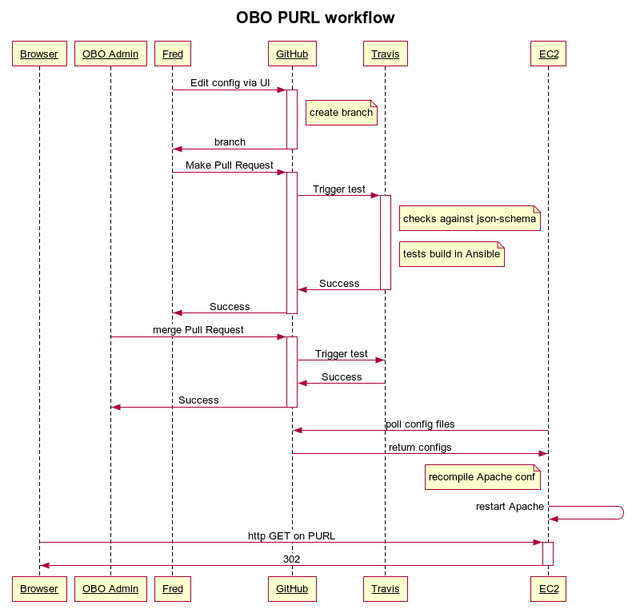

TODO
The first of the FAIR Principles is “F1: (Meta) data are assigned globally unique and persistent identifiers” . Most of the other FAIR Principles are impossible to support without such identifiers. Maintaining F1 requires long-term planning and commitment, which can be difficult to achieve for large, open community projects. Here we describe a low-cost, reliable solution developed by one such community.
The Open Biological and Biomedical Ontologies (OBO) Foundry is a community of open source ontology projects that have come together under a set of shared principles and best practises to create a suite of high-quality scientific ontologies that cover the biological and biomedical domains. Started in 2006 with eight candidate member projects and eight more projects under review, today the OBO library includes 160 active ontology projects, and supports five inactive and 46 obsolete projects. While a few of the largest OBO projects receive direct funding, the great majority of OBO projects are not directly funded, and are instead supported by volunteer efforts.
The OBO Foundry Principles predate but often overlap with the FAIR Principles. OBO Foundry Principle 3 states that each ontology and every class and relation that it contains must have a unique Uniform Resource Identifier (URI), also known as a Persistent Uniform Resource Locator (PURL). The OBO Identifier Policy lays out the details. Each OBO project has its own IDSPACE, such as “OBI” for the Ontology for Biomedical Investigations . Every term in OBI has an identifier of the form http://purl.obolibrary.org/obo/OBI_0000070, the primary Web Ontology Language artifact for OBI is then http://purl.obolibrary.org/obo/obi.owl, and OBI developers are allowed to mint PURLs beginning with http://purl.obolibrary.org/obo/obi/ to point to any resource they wish. The obolibrary.org domain name is owned by the OBO community.
The OBO community originally relied on a free PURL service offered by the Online Computer Library Center (OCLC) . The purl.obolibrary.org subdomain redirected to purl.org, a website that would redirect HTTP requests based on a database of PURL entries maintained by our ontology developers. OBO was just one of many projects and communities using this system. As a community we controlled controlled the upper obo namespace. Each OBO project had its IDSPACE below, with a list of project developers who could access a web form to search, modify, and add PURL entries. This system was effective and appreciated by the OBO community for many years.
In late 2015, the OCLC PURL system began to experience corruption of their database. To prevent further damage, OCLC chose to prevent further editing of PURLs. Existing PURLs continued to work, but OBO developers were not able to modify or add PURLs to the system. This was an untenable situation for a critical piece of infrastructure. We mobilized to find a solution.
Our direct inspiration was the w3id.org.org system . It consists of a set of .htaccess configuration files for the Apache HTTP Server , one for each of a large number of projects, stored and managed in a GitHub repository. The key advantages of this system are simplicity and robust foundations. The key information about each project’s PURLs is stored in a single text file. The whole system runs on the venerable Apache HTTP Server, one of the pillars of open source software and foundations for the World Wide Web. With decades of history and established community support, the future of the Apache HTTP Server seems to be as certain as any other technology supporting the Web.
With the w3id.org system as a basis, the OBO community had several additional requirements, mainly driven by a need to keep costs low. The foremost of these was the need for each ontology project to maintain its own PURL configuration as much as possible, which meant “self-serve” updates by ontology developers. We could not expect our community of ontology developers to be familiar with .htaccess files, which allow a wide range of configuration options, far beyond the small set of functionality required to configure PURLs. Our key innovation was an alternative configuration file format, using YAML, designed for our specific needs. Scripts would translate these YAML configuration files to .htaccess files.
In November 2015, the OBO PURL system was deployed by redirecting the purl.obolibrary.org subdomain from purl.org to our new server.
The OBO PURL system, like the OCLC PURL system that it replaced and the w3id.org system that inspired it, is fundamentally a web server that responds to HTTP requests with HTTP redirect responses. Most responses are HTTP 302 “Found” (originally called “Moved Temporarily” in the HTTP 1.0 specification), for which the body of the response is just the target URI. The PURL server does not itself host content, it simply redirects requests to another server that hosts the content. The key advantage is a layer of indirection: as resources are migrated to different hosts, with different URIs, the PURL system is updated to point to the new host, but the PURL stays the same.
The target of the redirect is determined by pattern matching against the PURL. The functionality required by the OBO community can be divided into three cases. First and simplest are exact matches, where a single PURL redirects to a single URI. Second are “prefix” matches, where the first part of the PURL is matched, and then the remaining “suffix” is appended to the target URI. Third and most complex are general regular expression matches. These can encode complex rules, but can also violate the division of the PURL “space” into distinct projects, discussed below. The use of this third type of matching rule is discouraged, but required to support a small number of cases.
Our primary goal was therefore to support HTTP redirects for these three cases. We had several additional requirements driven by a need to keep costs low. A key advantage of the OCLC system for OBO was that it was freely provided. Most OBO projects do not have funding, and rely on free or donated infrastructure. There was no direct funding available for an OBO PURL system, and no prospect of long-term funding. The new system would have to be built and maintained with a very limited budget of volunteer hours and donated resources. Constrained resources also drove a need to build a system that could be expected to last for many years with minimal modifications. In addition to cost considerations, the OBO commitment to open source was a strong reason to choose open source software. We were willing to spend more time on initial design and implementation of features for which we were convinced that this would lower long-term maintenance costs.
The first implementation decision we made was to follow w3id.org in their choice of the Apache HTTP Server. Initially released in 1995, the Apache HTTP Server is nearly as old as the Web itself, and it has had a central role in the Web ever since, with recent estimates that it serves more than a third of all traffic on the Web today . We use the 2.0 series of Apache HTTP Server, often called apache2.
We also followed w3id.org in using .htaccess files to configure the server, and dividing these files by project. The Apache HTTP Server can be configured from a single, “global” configuration file, but it also supports modifications of the global configuration by .htaccess files inside the DocumentRoot directory of files to serve. When an HTTP request is received, the server will try to map the request path to a path on the file system. It will then search that directory on the file system, and all the directories above it, for .htaccess files. The configuration in the .htaccess files is merged with the global configuration, and the server handles the response. Because the file system is hierarchical, the use of .htaccess files allows for a similarly hierarchical configuration of the server.
For our purposes, the key advantage of configuration with .htaccess files is that each OBO project has a directory that corresponds to the project’s IDSPACE and contains the project’s .htaccess file. The configuration in the project’s .htaccess file has no effect on other OBO projects in other directories. This isolation prevents mistakes or errors in one project’s configuration from affecting other projects. For example, the Ontology for Biomedical Investigations has IDSPACE “OBI”, and the OBI project is granted control of all PURLs starting with http://purl.obolibrary.org/obo/obi/. The OBO PURL system has a www/obo/obi/.htaccess file that configures the majority of PURLs for the OBI project (with exceptions discussed below). When a request for http://purl.obolirbary.org/obo/obi/obi_core.owl is received, the Apache HTTP Server will look on the file system, find that www/obo/obi/.htaccess file, and use that configuration to handle the request. Critically, the Gene Ontology’s (GO) [CITE] www/obo/go/.htaccess file is not used to handle this request, so the PURL configuration for GO is isolated from the configuration for OBI.
At this point, our use cases for a PURL system began to differ from w3id.org. While the separation of projects in w3id.org is strict, and so separate .htaccess files meet the majority of needs, the OBO Identifier Policy puts many PURLs in the shared space directly under http://purl.obolibrary.org/obo/. These include ontology term identifiers such as http://purl.obolibrary.org/obo/OBI_0000070 and OWL files such as http://purl.obolibrary.org/obo/obi.owl. Using the .htaccess configuration mechanism, all ontology projects would have to be able to modify the www/obo/.htaccess file. Since this configuration is read when accessing OBI, GO, and all other project-specific .htaccess files, mistakes and errors could affect any and all OBO projects. We would need another way to enforce isolation.
To reduce the maintenance burden on our core team of developers, we wanted the developers for each OBO project to be able to maintain the PURL configuration for their own project. We could not expect these developers to be familiar with regular expressions, and wanted additional safeguards to enforce isolation. The .htaccess files allow a wide range of server configuration, far beyond what is required for PURL redirects.
Our solution was to define a custom configuration format using the YAML language that was suited to our specific needs and the OBO Identifier Policy. YAML is a widely used format for structured data, with parsing libraries available in most modern programming languages. While XML and JSON are other widely-used formats for configuration files, YAML is particularly light-weight and well-suited for people to read and write. Each project is assigned a YAML file to maintain. Python scripts are used to validate the YAML against a schema, then translate it into .htaccess files.
shows an excerpt from the obi.yml configuration file.
idspace: OBI
base_url: /obo/obi
products:
- obi.owl: https://raw.githubusercontent.com/obi-ontology/obi/v2018-08-27/obi.owl
- obi.obo: http://ontologies.berkeleybop.org/obi.obo
term_browser: ontobee
example_terms:
- OBI_0000070
entries:
- exact: /obi_core.owl
replacement: https://raw.githubusercontent.com/obi-ontology/obi/v2018-08-27/obi_core.owl
- prefix: /dev/
replacement: https://raw.githubusercontent.com/obi-ontology/obi/master/src/ontology/
tests:
- from: /dev/obi-edit.owl
to: https://raw.githubusercontent.com/obi-ontology/obi/master/src/ontology/obi-edit.owlThis YAML file consists of various key/value pairs, and some ordered lists. First, the idspace key has the value OBI. The base_url is the prefix for all PURLs in the project’s unrestricted space. For OBI, this means all PURLs that start with http://purl.obolibrary.org/obo/obi/.
The products key has a list of the “top-level” artifacts for OBI in the shared part of the space of OBO PURLs. These two list items correspond to the PURLs http://purl.obolibrary.org/obo/obi.owl and http://purl.obolibrary.org/obo/obi.obo respectively.
The term_browser indicates where individual OBI terms such as http://purl.obolibrary.org/obo/OBI_0000070 should be handled. Ontobee is a term browser used by many OBO projects [CITE]. The example_terms key has a list of term IDs for testing purposes.
The entries list is the largest part of the YAML configuration files for the OBO PURL system. There are three types of entries, corresponding to the three cases discussed above: exact, partial, and regex. An exact entry specifies the last part of the PURL and the replacement URI. The PURL is formed by concatenating: the domain “http://purl.obolibrary.org”, the base_url, and the value of exact. Automated tests can check that the server responds to that PURL with an HTTP 302 response containing exactly the value of replacement.
The second type of entry is prefix. The PURL is formed as before and matched against the request. If the first part of the request matches, the remaining “suffix” is appended to the value of replacement to form the response URI. The optional tests key contains a list of test cases that can check that the prefix entry is properly formed. Not shown in is the regex entry, which is structurally similar to prefix entries, but allows an arbitrary regular expression for matching.
The order of entries is significant. The first matching entry will be used for the response.
The list of entries is translated into the project-specific .htaccess file, and therefore configures all the PURLs in the project’s own unrestricted space. The other keys are translated into the shared .htaccess file for the shared OBO PURL space. These are tightly controlled, providing another layer of isolation between projects.
It is also worth considering the features that we did not support with our YAML configuration files. In particular, there are no variables or macro expansions, just literal data. This can mean that strings are repeated, violating the “Don’t Repeat Yourself” mantra of many programmers, but it has the advantage of simplicity: simpler code, a simpler mental model for users reading and writing the files, and simpler debugging. We have also focused completely on PURL configuration – there is no other data or metadata about the ontology project in these configuration files. OBO maintains a registry of ontologies with data and metadata about each project, also using YAML for structured information. We considered merging the registry with the PURL system, and using a single YAML file for project (meta)data and PURLs. In the end, we decided on a separation of concerns between the registry and PURL system.
The YAML files are read, validated, and translated into .htaccess files by scripts. We chose Python 3 as the programming language to implement these scripts, since it is well-known, well-supported, well-established, and open source. We expect Python 3 to be supported for many years to come.
Our PURL system is critical infrastructure, and we have implemented a thorough testing process to check and maintain it. Our Python scripts are tested against a set of known-good example files. Each YAML file is checked with a JSON Schema [CITE], first converting YAML to JSON, then using Python’s jsonschema library [CITE]. Another Python script reads the YAML configuration files again for test specifications, and makes a series of HTTP requests against the Apache HTTP Server to verify that responses are as configured.
We use Ansible [CITE], a software provisioning system, to automated the deployment of the OBO PURL system. The target of the deployment can be: a local Vagrant [CITE] virtual machine, for development; a Travis CI [CITE] container, for continuous integration testing; or the production server. By using the same Ansible configuration to provision all three of these environments, we try to ensure that our development and testing systems are as similar as possible to the production system.
For our operating system we chose Ubuntu Linux [CITE], although many other Linux distributions would have worked as well. Ubuntu is open source, freely available, and supports the software and libraries we require. The most relevant factor in this choice was that Travis CI supports Ubuntu by default, and so using Ubuntu for all three environments was straightforward.
The PURL configuration, scripts, and deployment tools are all managed in a git repository for version control [CITE]. Since the .htaccess files are generated directly and deterministically from the YAML configuration files and Python scripts, they are excluded from version control. The git repository is hosted on GitHub [CITE], which provides a number of convenient features. If GitHub were to shut down, it would be straightforward to migrate the git repository to another host, or host the repository on our own server.
The convenient features offered by GitHub go beyond browsing the files and their histories in the repository. It is straightforward for any GitHub user to use the GitHub web interface to edit any of the YAML configuration files and make a Pull Request (PR). The PR is then automatically tested using Travis CI and the automated tests described above, resulting in a simple “pass/fail” message and a log. Our core developers then manually review the PR, check that the user is allowed to edit these PURLs, ask for changes or help fix problems, and merge the changes into the master branch. Like GitHub, the use of Travis CI is convenient, but we could switch to another CI service or host our own automated testing if required.
The production PURL server checks GitHub for changes to master every ten minutes, using cron for scheduling and GNU Make [CITE] to execute tasks. If there has been a recent change that has passed the Travis CI tests, then the changes are “pulled” from the master branch of the GitHub repository and tested again on the server. If all test pass, the new configuration replaces the old configuration, and the server is up-to-date with the GitHub repository. shows the sequence of events for a normal PURL configuration change.

The initial development of the OBO PURL system required migration of thousands of PURL entries from the OCLC PURL system. Fortunately, even though the editing features of the OCLC PURL editing interface were locked due to technical problems during that period, it was still possible to search for PURL entries and download that information in XML files. We wrote a Python script that fetched an XML file for each project and converted the XML to our YAML format. Then we performed extensive manual and automated testing to ensure that our new OBO PURL system was returning the same responses as the OCLC PURL system that it was replacing. After the initial migration, all configuration has been maintained in the YAML files for the new system.
On November 23, 2015 we updated the DNS for purl.obolibrary.org to point to our new OBO PURL server. We gave the OBO community advanced notice and asked to be notified of any problems. No problems were reported. The system has been running ever since, including one migration to a new server. As of this writing, the git repository has had 54 contributors making nearly one thousand commits. The OBO community has been uniformly positive about our PURL system.
At the time of writing, the OBO PURL system is handling between 17,000 and 56,000 hits per day, from between 800 and 2000 unique visitors per day. An average of 20 hits per day are handled as HTTP errors (a "4xx" status code), with the rest handled as redirects. The goaccess log analyzer [CITE] (version 1.3) classifies 75% of hits as "Crawlers" (with Google appearing to account for 30%) and 15% as "Unknown". This indicates that 90% of traffic is from automated agents, and just 10% from humans using web browsers.
The system has been running on a single “t2.micro” virtual server on Amazon Web Service (AWS) Elastic Compute Cloud (EC2). While this is not the cheapest hosting option, AWS is flexible and powerful, and our costs are approximately $20 USD per month. The Apache HTTP Server is very efficient at handling PURL requests, and this very basic virtual server has proved more than adequate for our needs. While AWS is convenient, nothing about our system locks us in to a single hosting provider.
The most significant problem we have encountered with the OBO PURL system was caused by differences between the Travis CI and production environments [CITE]. The first version of the system used the kwalify YAML schema validation tool to check configuration files. Although standard packages were installed, the installed path differed between the Vagrant/production environment and the Travis CI environment. The upshot was when an edit caused a YAML file violate our schema, the continuous integration checks would still pass, and developers would merge changes, but then tests would fail on the production server, blocking any updates until the schema violation was fixed. This proved difficult to debug, since our only means of access to the Travis CI environment was by making a commit, waiting for the tests to run, and then checking the log for the commit. In the end, we replaced the kwalify tool with the jsonschema Python library, and converted the schema to JSON Schema.
Initial development of this system, testing, and migration of PURL entries from OCLC took one developer approximately three weeks of full-time effort, with support for design, testing, and review by our small team of core developers who work on shared OBO infrastructure. In early 2019 we assigned a developer who was new to the project to review and revise the code for improved documentation and maintenance, and faster translation of the YAML. This was completed in approximately 40 hours of work. The most interesting part of the refactoring is that we were able to check that the revised code translated each YAML file to exactly the same .htaccess file as before. This was an unexpected benefit of our two-layer configuration approach, which (along with our other automated tests) assured us that the revisions were correct.
Although a single small server has easily handled our load, we would like to add a second or third server to improve redundancy and reduce downtime in case one server fails. This is common practise for web applications, but it would increase the complexity and costs of our system significantly. We are currently in the process of implementing a simple two-server configuration with a load-balancer.
Our YAML configuration files are certainly easier for our users to read and write than .htaccess files. We would like to make the editing process even simpler, and thereby increase the number of ontology developers who are comfortable maintaining the PURL configuration for their projects. We have developed a prototype web-based editor for our YAML files using the CodeMirror editor [CITE]. The key advantage of this system is immediate validation of the YAML, giving the user direct feedback about mistakes and errors. This prototype is currently under review by our developers. We have also considered a more structured HTML form driven by our JSON Schema.
FAIR data is not possible without unique and persistent identifiers. Maintaining these identifiers requires managing the tides of change, both for technology such as hosting providers, but also for the people who develop, use, and maintain that technology. PURL systems introduce a layer of abstraction that allows the same PURL to redirect to different URIs over time. As long as users and their tools use the PURLs, and developers maintain the PURL mappings, the same PURL will continue to point to the same resource indefinitely.
Maintaining a PURL system has real costs. For open source projects and communities such as OBO that rely on volunteer efforts and donated resources, these costs are significant. It is tempting to outsource your PURL system to a third party. While that may be the right choice in many cases, there are also risks. The OBO community was forced to quickly migrate away from OCLC, and decided that building and maintaining our own PURL system was the better choice for our needs.
Here we have described a low-cost, low-maintenance PURL system that suits the specific needs of the OBO community. It was carefully designed not to be exciting or cutting-edge. We rely on the time-tested Apache HTTP Server at root, then use well-established open source software such as Python, YAML, and GNU Make to build a customized configuration layer. We combine free and low-cost services such as GitHub, Travis CI, and AWS EC2 to implement the system, while being careful to ensure that we will be able to migrate away from any of these services when the need arises.
The OBO PURL system has been a success story for our community. Despite pressure to replace the failing OCLC system quite quickly, the migration to the new system went smoothly. The system has run reliably. More than 50 ontology developers have used it, making nearly 1000 changes to manage PURLs for 175 projects, and counting. Thousand of PURLs are handled every day, ensuring that OBO terms and ontologies continue to be Findable, so that they can also be Accessible, Interoperable, and Reusable.
The acknowledgements of a document.
https://github.com/perma-id/w3id.org
https://github.com/OBOFoundry/purl.obolibrary.org/issues/290
Wilkinson, M. D., Dumontier, M., Aalbersberg, I. J., Appleton, G., Axton, M., Baak, A., ... & Bouwman, J. (2016). The FAIR Guiding Principles for scientific data management and stewardship. Scientific data, 3. https://doi.org/10.1038/sdata.2016.18
Smith, B., Ashburner, M., Rosse, C., Bard, J., Bug, W., Ceusters, W., ... & Leontis, N. (2007). The OBO Foundry: coordinated evolution of ontologies to support biomedical data integration. Nature biotechnology, 25(11), 1251. https://dx.doi.org/10.1038%2Fnbt1346
OBO Foundry Principle 3 URI/Identifier Space
. http://obofoundry.org/principles/fp-003-uris.html (last visited June 1, 2019).
OBO Foundry Identifier Policy. http://obofoundry.org/id-policy.html (last visited June 1, 2019).
Bandrowski, A., Brinkman, R., Brochhausen, M., Brush, M. H., Bug, B., Chibucos, M. C., ... & Fan, L. (2016). The ontology for biomedical investigations. PloS one, 11(4), e0154556. https://doi.org/10.1371/journal.pone.0154556
Hitzler, P., Krötzsch, M., Parsia, B., & Rudolph, S. (2009). OWL 2 Web Ontology Language Primer. https://www.w3.org/TR/owl2-overview/
w3id.org -- Permanent Identifiers for the Web. http://w3id.org (last visited June 1, 2019).
OCLC: Worldwide, member-driven library cooperative. https://oclc.org (last visited June 1, 2019).
Apache HTTP Server Project. https://httpd.apache.org (last visited June 1, 2019).
August 2018 Web Server Survey. https://news.netcraft.com/archives/2018/08/24/august-2018-web-server-survey.html (last visited June 1, 2019).
Peroni, S. (2014). Research Articles in Simplified HTML (RASH). https://rawgit.com/essepuntato/rash/master/grammar/rash.rng
Wikipedia entry Paragraph
. https://en.wikipedia.org/wiki/Paragraph (last visited, December 17, 2014).
Footnote 1.
Footnote 2.
Footnote 3.